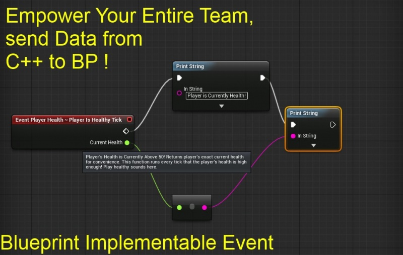

Blueprints, Empower Your Entire Team With BlueprintImplementableEvent
Contents
- 1 Overview
- 2 Providing Blueprints With Data And Critical Timings
- 3 PlayerController.h
- 4 Tick Function
- 5 Sending Data to Blueprints From C++
- 6 Calling a BlueprintImplementableEvent in Blueprints
- 7 4.8+ Standard, Non Virtual
- 8 C++ to BP Interface
- 9 Debugging BlueprintImplementableEvent
- 10 Return Values
- 11 Blueprints For More Than Prototyping
- 12 Use Blueprints & BlueprintImplementableEvent to Empower Your Entire Team
Overview
Original Author: ( )
Dear Community,
Here is perhaps the most powerful thing you can do as a c++ programmer for blueprint programmers!
So you've created your awesome new amazing C++ system,
but how do you tell the blueprint world when critical events occur in your C++ system?
You need to not only be able to have blueprint programmers call functions that use your C++ system,
you need to be able to spontaneously provide info to blueprint graph system, based on Run-Time events.
This is where BlueprintImplementableEvents come into play!
Providing Blueprints With Data And Critical Timings
Using the BlueprintImplementableEvent you can not only tell blueprints when a critical game event has occurred that your awesome C++ system is tracking / creating,
you can also send variable data to blueprints!
Example code below!
PlayerController.h
.h
/** Player's Health is Currently Above 50! Returns
player's exact current health for convenience. This
function runs every tick that the player's health
is high enough! Play healthy sounds here. */
UFUNCTION(BlueprintImplementableEvent, meta=(FriendlyName = "Player Health ~ Player Is Healthy Tick"))
void PlayerIsHealthyTick(float CurrentHealth);
.cpp
void AYourPlayerController::PlayerTick(float DeltaTime)
{
Super::PlayerTick(DeltaTime);
//========================
// BP Interface
if(Health >= 50)
{
this->PlayerIsHealthyTick(Health);
}
//========================
}

This
this->PlayerIsHealthyTick(Health);
I personally use this-> to tell myself I am not actually calling a C++ function, but am sending info to BP.
You could exclude the use of this->
Tick Function
Note that the sample code is sending an event to blueprints every tick!
You can call BlueprintImplementableEvent's any way you want,
but I used this example to show a constant interfacing from c++ to blueprint graphs.
Sending Data to Blueprints From C++
Notice how the player's current health is being sent to blueprints as a function parameter!
You can pass any data you want from C++ to blueprints this way!
Calling a BlueprintImplementableEvent in Blueprints
Make sure to include BlueprintCallable if you want to also call your event in Blueprints!
UFUNCTION(Category = "Player Health", BlueprintImplementableEvent, BlueprintCallable)
void PlayerIsHealthyTick(float CurrentHealth);
4.8+ Standard, Non Virtual
As of 4.8 BlueprintImplementableEvents should not be made virtual!
From the 4.8 Engine upgrade notes:
Removed "virtual" keyword from several engine-level BlueprintImplementableEvents to conform to the new "BlueprintImplementableEvents should not be virtual" standard.
C++ to BP Interface
I am using the term interface loosely here, to describe how it is that you as the C++ programmer of an awesome new game mechanic can give Blueprint users all the info they need about what your C++ system is doing!
You can do all the core calculations in C++, and just send blueprint graphs the results!
Debugging BlueprintImplementableEvent
If you are having trouble getting a BlueprintImplementableEvent to show up in the blueprint graph, it is probably because you have a return type!
If you do have a return type , your BP implementable event will show up in your bp's overrideable functions list!
Return Values
If you define a C++ BlueprintImplementableEvent event with a return value, you can then override it as a function in the BP of the C++ Class to return the value!
UFUNCTION(BlueprintImplementableEvent)
float GetBPAdjustedPlayerHealth();
Recall that non-const references are also return values:
UFUNCTION(BlueprintImplementableEvent)
void GetBPAdjustedPlayerName(FString& BPModifiedName);
Blueprints For More Than Prototyping
Using BlueprintImplementableEvent's I can now show you that blueprints are amazing for far more than just prototyping game logic that should then be re-written in C++.
Using BlueprintImplementableEvent's, you can actually build a complex low-level c++ system ,
and then provide the blueprint graphs with all the critical access points and information needed,
so that blueprints can fully extend and utilize the core C++ system!
Use Blueprints & BlueprintImplementableEvent to Empower Your Entire Team
In this way, you as a C++ programmer can empower your entire team to access, utilize, and extend a core C++ system in blueprints!
This is my favorite thing about the synergy of C++ with Blueprints!
You can write the core system in C++, and then give all of its power and new creativity to the blueprint programmers to take in all sorts of new directions!
Enjoy!
( )